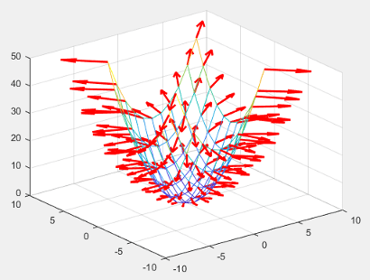

Saving and Loading Instances of Chart Classes
Charts that inherit from the ChartContainer base class follow the
same rules for saving and loading as other MATLAB® objects. However in some cases, you might want your objects to save and
load additional information. For example, to provide support for saving and loading the
result of interactive changes, such as rotating or zooming, you must store the modified
view of the axes in a property on your class. By defining properties and methods for
storing and retrieving these kinds of changes, you enable users to save and reload
instances of your chart with their changes preserved.
Coding Pattern for Saving and Loading Axes Changes
The built-in axes interactions change certain properties on the axes. For example,
dragging to rotate a 3-D chart changes the View property.
Similarly, scrolling to zoom within a chart changes the XLim,
YLim, (and possibly ZLim) properties
on the axes. To preserve the changes when the user saves and reloads the chart, add
these components to your class:
Define a protected property for storing the chart state — This property provides a place to store the axes changes when MATLAB saves the chart object. For example, you might name this property
ChartState.Define a
getmethod for retrieving the chart state — This method does either of two things depending on whether MATLAB is saving or loading the chart object. When MATLAB saves the chart object, the method returns the relevant axes changes so they can be saved. When MATLAB loads the chart object, the method returns the axes changes that are stored in theChartStateproperty.Define a protected method that updates the axes — When the chart object loads into MATLAB, this method calls the
getmethod for theChartStateproperty and then updates the relevant axes properties for the chart.
Define a Protected Property for Storing the Chart State
Define a protected property to store the relevant axes information. This property
is empty except when MATLAB sets its value during the save process, or when MATLAB loads a saved instance of the chart. Define the property with a name
that is useful and easy to recognize. For example, define a property called
ChartState.
properties (Access = protected) ChartState = [] end
Define a get Method for Retrieving the Chart State
Define a public get method for the
ChartState property. Like all set and
get methods, this method automatically inherits the access
permissions of the ChartState property. MATLAB calls this method when it saves an instance of the chart.
Within this method, create a variable called
isLoadedStateAvailable that stores a
logical value. This value is true when the
ChartState property is not empty.
Next, write a conditional statement that checks the value of
isLoadedStateAvailable. Divide the statement into clauses:
if...thenclause — TheisLoadedStateAvailablevalue istrue. Return the contents of theChartStateproperty.elseclause — TheisLoadedStateAvailablevalue isfalse. Create a structure and get the axes object. Add theXLim,YLim, andZLimfields to the structure only if theXLim,YLim, andZLimproperties on the axes changed. To test whether the axes properties changed, check to see if the corresponding mode properties are set to'manual'. Since there is no mode property associated with the axesViewproperty, add theViewfield to the structure without checking anything.
methods
function data = get.ChartState(obj)
isLoadedStateAvailable = ~isempty(obj.ChartState);
if isLoadedStateAvailable
data = obj.ChartState;
else
data = struct;
ax = getAxes(obj);
% Get axis limits only if mode is manual.
if strcmp(ax.XLimMode,'manual')
data.XLim = ax.XLim;
end
if strcmp(ax.YLimMode,'manual')
data.YLim = ax.YLim;
end
if strcmp(ax.ZLimMode,'manual')
data.ZLim = ax.ZLim;
end
% No ViewMode to check. Store the view anyway.
data.View = ax.View;
end
end
endDefine a Protected Method That Updates the Axes
Define a protected method called loadstate. In this method,
perform these steps:
Query the
ChartStateproperty and store the returned value asdata.Check for the existence of the
XLim,YLim,ZLim, andViewfields before updating the corresponding properties on the axes.Clear the contents of the
ChartStateproperty.
After you create this method, call it near the end of the
setup method (after creating the graphics objects that make
up your chart). The setup method executes when MATLAB creates a new instance of the chart or when it loads an instance of a
chart.
function loadstate(obj) data=obj.ChartState; ax = getAxes(obj); % Look for states that changed if isfield(data, 'XLim') ax.XLim=data.XLim; end if isfield(data, 'YLim') ax.YLim=data.YLim; end if isfield(data, 'ZLim') ax.ZLim=data.ZLim; end if isfield(data, 'View') ax.View=data.View; end % Reset ChartState to empty obj.ChartState=[]; end
Example: 3-D Plot That Stores Axis Limits and View
Define a MeshGradientChart class for displaying a mesh plot
with x and y gradient vectors at the grid
points. Design this class so that the XLim,
YLim, ZLim, and
View properties of the axes are preserved when the user
saves and reloads an instance of the chart.
To define this class, create a program file named
MeshGradientChart.m in a folder that is on the MATLAB path. Then implement the class by following the steps in the
table.
| Step | Implementation |
|---|---|
Derive from the |
classdef MeshGradientChart < matlab.graphics.chartcontainer.ChartContainer |
Define the public properties. |
properties
XData (:,:) double = []
YData (:,:) double = []
ZData (:,:) double = []
end |
Define the private properties. One property stores a
|
properties (Access = private,Transient,NonCopyable)
SurfaceObject (1,1) matlab.graphics.chart.primitive.Surface
QuiverObject (1,1) matlab.graphics.chart.primitive.Quiver
end |
Define a protected |
properties (Access = protected)
ChartState = []
end |
Implement the |
methods(Access = protected)
function setup(obj)
ax = getAxes(obj);
% Create Mesh and Quiver objects.
obj.SurfaceObject=mesh(ax,[],[],[],'FaceColor','none');
hold(ax,'on')
obj.QuiverObject=quiver3(ax,[],[],[],[],'Color','r','LineWidth',2);
hold(ax,'off')
% Load state of the axes.
loadstate(obj);
end |
Implement the |
function update(obj) % Update Mesh data. obj.SurfaceObject.XData = obj.XData; obj.SurfaceObject.YData = obj.YData; obj.SurfaceObject.ZData = obj.ZData; % Update locations of vector tails. obj.QuiverObject.XData = obj.XData; obj.QuiverObject.YData = obj.YData; obj.QuiverObject.ZData = obj.ZData; % Update lengths and directions of vectors. [gradx,grady] = gradient(obj.ZData); obj.QuiverObject.UData = gradx; obj.QuiverObject.VData = grady; obj.QuiverObject.WData = zeros(size(obj.ZData)); end |
Implement the |
function loadstate(obj) data=obj.ChartState; ax = getAxes(obj); % Look for states that changed. if isfield(data, 'XLim') ax.XLim=data.XLim; end if isfield(data, 'YLim') ax.YLim=data.YLim; end if isfield(data, 'ZLim') ax.ZLim=data.ZLim; end if isfield(data, 'View') ax.View=data.View; end % Reset ChartState to empty. obj.ChartState=[]; end end |
Implement the |
methods
function data = get.ChartState(obj)
isLoadedStateAvailable = ~isempty(obj.ChartState);
% Return ChartState content if loaded state is available.
% Otherwise, return current axes state.
if isLoadedStateAvailable
data = obj.ChartState;
else
data = struct;
ax = getAxes(obj);
% Get axis limits only if mode is manual.
if strcmp(ax.XLimMode,'manual')
data.XLim = ax.XLim;
end
if strcmp(ax.YLimMode,'manual')
data.YLim = ax.YLim;
end
if strcmp(ax.ZLimMode,'manual')
data.ZLim = ax.ZLim;
end
% No ViewMode to check. Store the view anyway.
data.View = ax.View;
end
end
end
end |
Next, create an instance of the chart. Then rotate or zoom into the chart and save it. The object preserves the interactive changes when you load the chart back into MATLAB.
Create an instance of the chart
[X,Y] = meshgrid(-5:5); Z = X.^2 + Y.^2; c = MeshGradientChart('XData',X,'YData',Y,'ZData',Z);

When you create the chart:
The
setupmethod calls theloadstatemethod.The
loadstatemethod performs these tasks, which ultimately have no effect on the chart object or the underlying axes object.Call the
get.ChartStatemethod, which returns a structure containing the current value of the axesViewproperty.Reset the
Viewproperty on the axes to the value stored in the structure.Clear the contents of the
ChartStateproperty.
Rotate or zoom into the chart and save it
savefig(gcf,'mychart.fig')When you save the chart, MATLAB calls the get.ChartState method, which returns
a structure containing:
The values of the
XLim,YLim, orZLimproperties on the axes, but only if they changedThe value of the
Viewproperty on the axes
After MATLAB retrieves the structure, it stores the structure in the
ChartState property of the chart object that is being
saved.
Load the chart that you saved
openfig('mychart.fig')When you load the chart:
The
setupmethod calls theloadstatemethod.The
loadstatemethod performs these tasks:Call the
get.ChartStatemethod, which returns the structure from theChartStateproperty.Reset the
XLim,YLim,ZLim, andViewproperties on the axes, but only if the structure contains the corresponding fields.Clear the contents of the
ChartStateproperty.